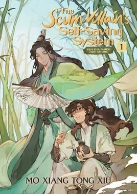

The Scum Villain's Self-Saving System
Synopsis
A reader who died mocking a novel wakes up inside it as the villainous master of its hero, and must change his fate before it’s too late.
The Reader’s Last Words
Summary of chapter 1
The story opens with a summary of the novel that its reader, Shen Yuan, has just finished. Its hero, Luo Binghe, is abandoned as a baby, adopted by a kind washerwoman, and raised in poverty. After his adoptive mother dies, he joins a famous cultivation sect, where his master Shen Qingqiu, jealous of his talent, mistreats him.
Betrayed at a great gathering of cultivators, Luo Binghe falls into an abyss between the demon and human realms, where he discovers his half-demon heritage and a unique sword skill. He returns changed, takes revenge on every enemy, and eventually unites the three realms, gaining a vast harem along the way.
Shen Yuan, who read to the very end, is unimpressed. His last act before dying is to curse the novel and its author, mocking the author’s online name and the absurd, over-complicated plot. The text pasted here cuts off in the middle of his complaints, so the summary stops there too.